One secure portal for a drum major team: announcements through the band's own Gmail with open tracking, a Google Drive-backed music library, events, tasks and a sticky-note idea board — plus the audit trail and handoff notes that keep institutional memory alive between graduating classes.
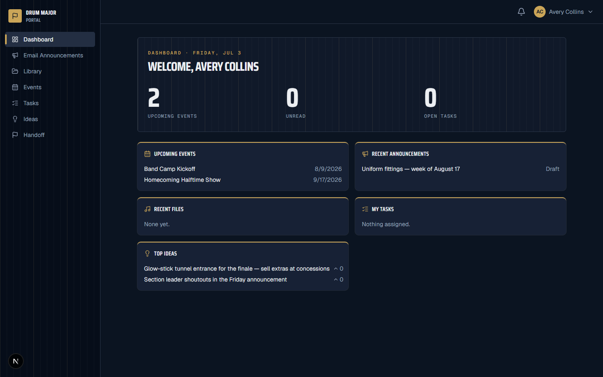
Next.js 16 + PostgreSQL, self-hosted as a native systemd service behind Caddy — no Docker anywhere.
Compose rich-text announcements to recipient groups, send now or schedule, and watch per-recipient Delivered/Opened counts fill in via an invisible tracking pixel. Drafts, templates, and an optional admin approval queue included.
Each piece gets its own Google Drive folder. Upload PDFs with versioning, search by title/composer/arranger/tags, preview inline through an auth-gated proxy, and attach pieces to announcements — small files as copies, big ones as shared links.
Events can notify the whole band on save. Tasks move across a Kanban board with assignees and notifications. Ideas live on a draggable sticky-note wall with votes, comments, and an anonymous option.
Signup happens only through invites, restricted to school email domains. Hand-rolled DB sessions power an active-session list, "log out other devices," and admin impersonation that logs to a separate security log.
An admin-visible audit log records every upload, send, and role change. The handoff center keeps year-by-year "what worked / what didn't" notes so each new drum major class starts ahead.
The Gmail app password and Drive service-account JSON are AES-256-GCM encrypted before they touch the database, entered through a guided first-run wizard — no redeploys to rotate credentials.
Captured from the app running locally on its zero-install PGlite dev database, seeded with demo content.
A four-step first-run wizard bootstraps the org, first admin, SMTP, and Drive — then it's invite-only forever.
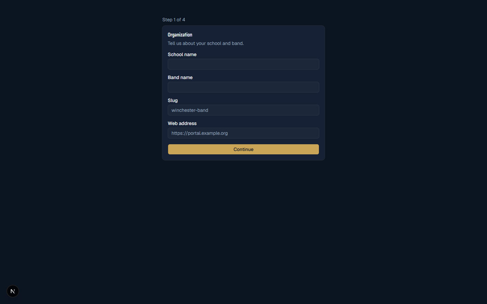
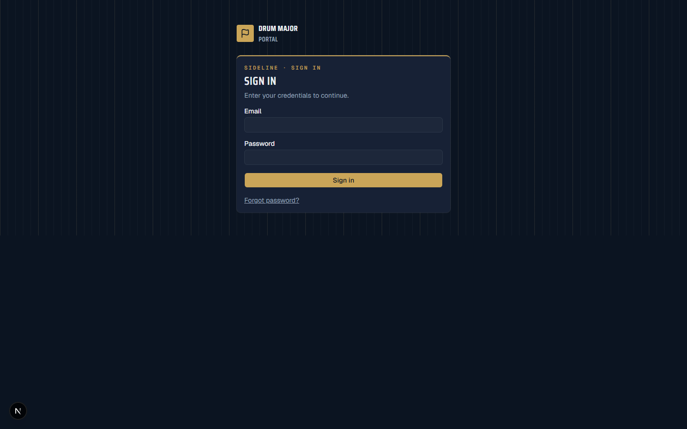
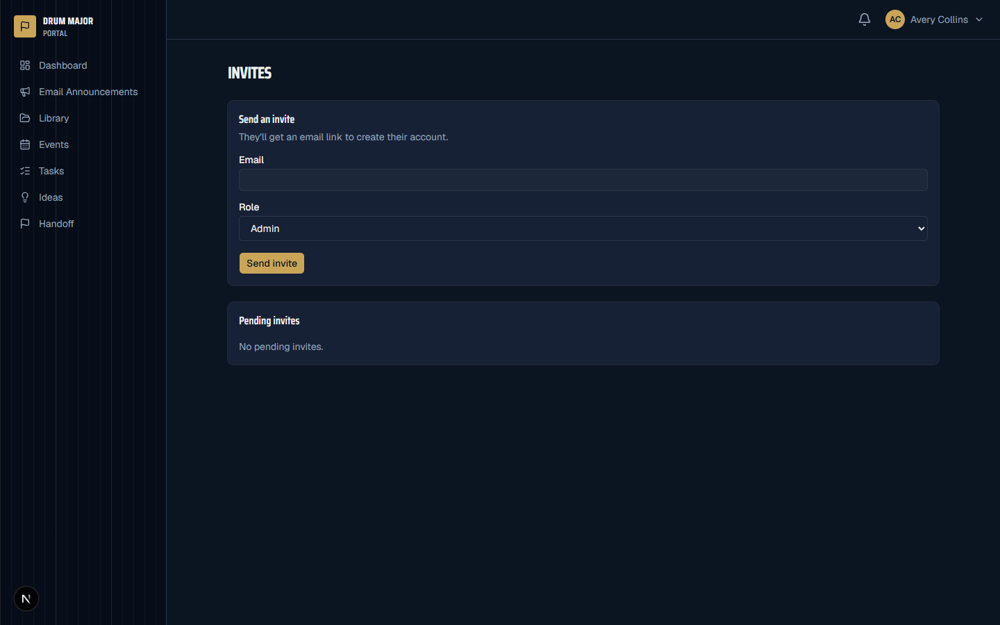
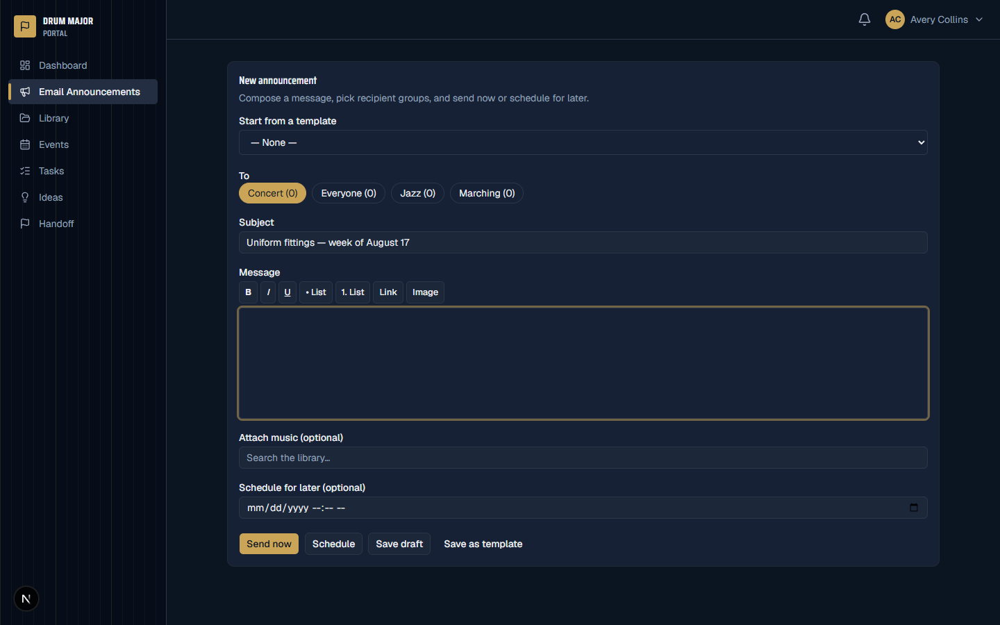
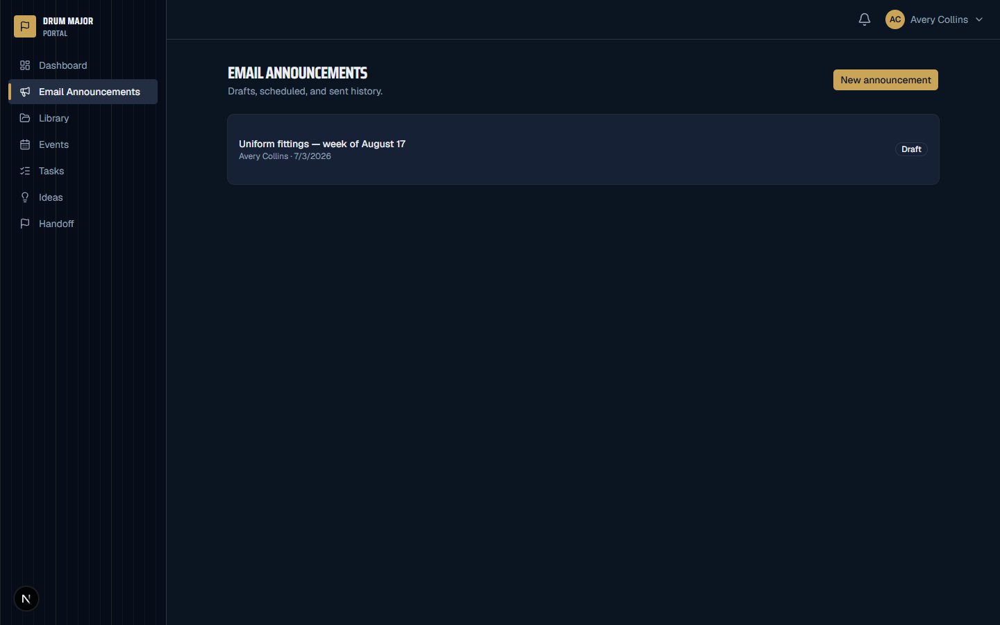
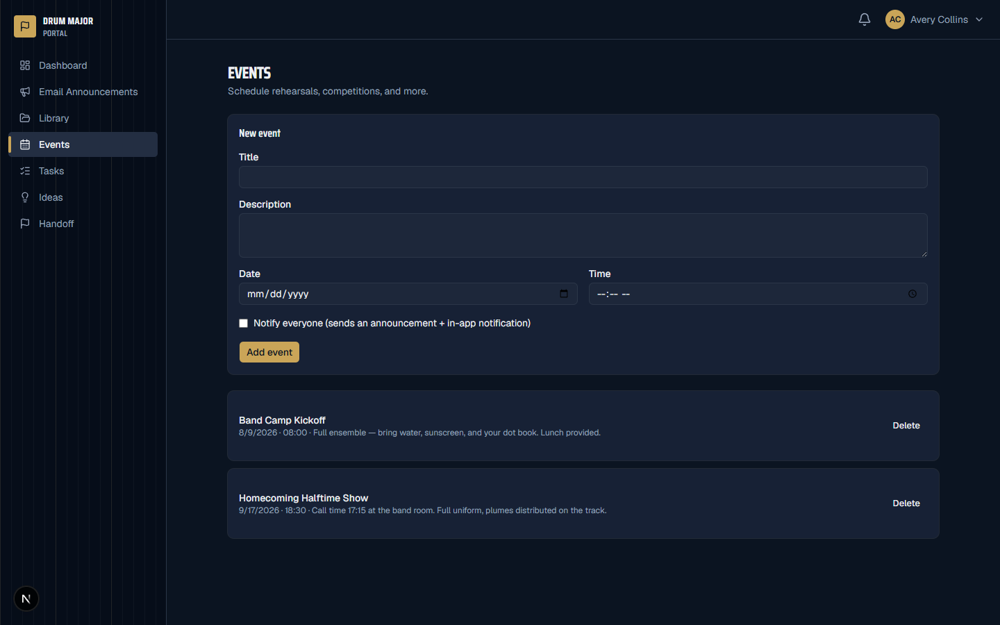
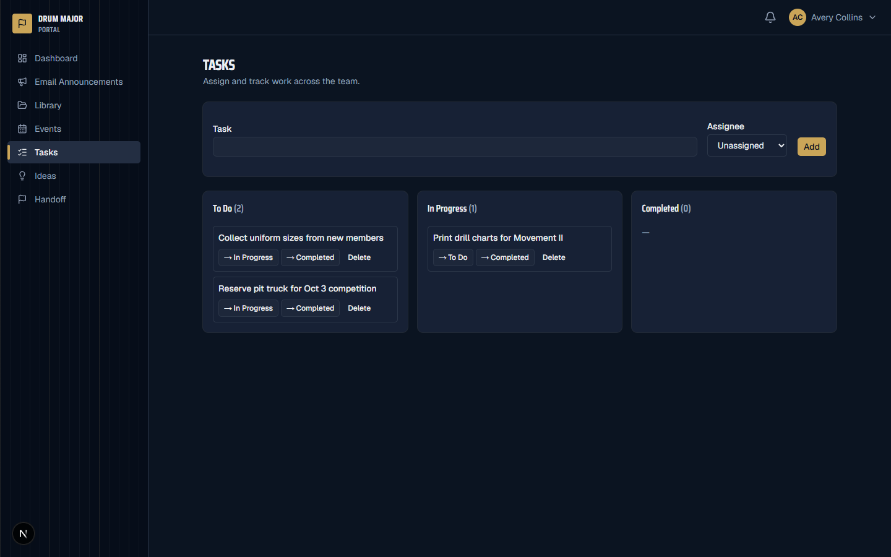
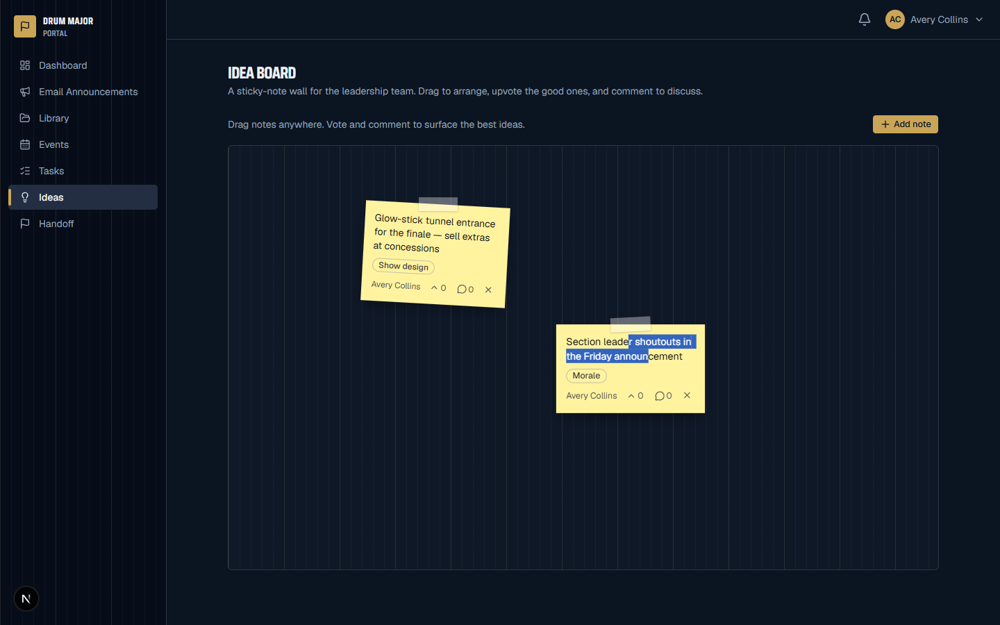
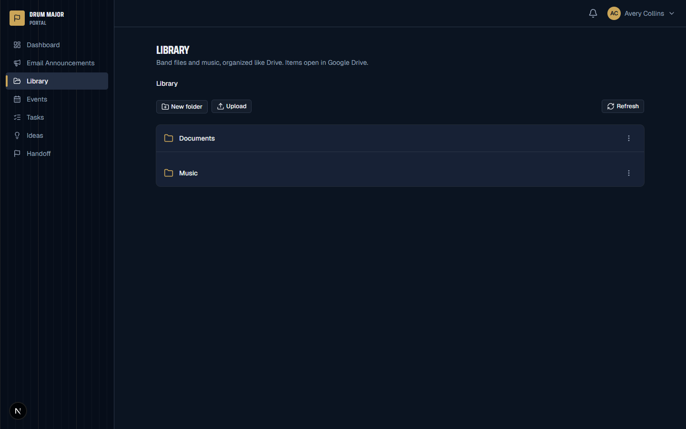
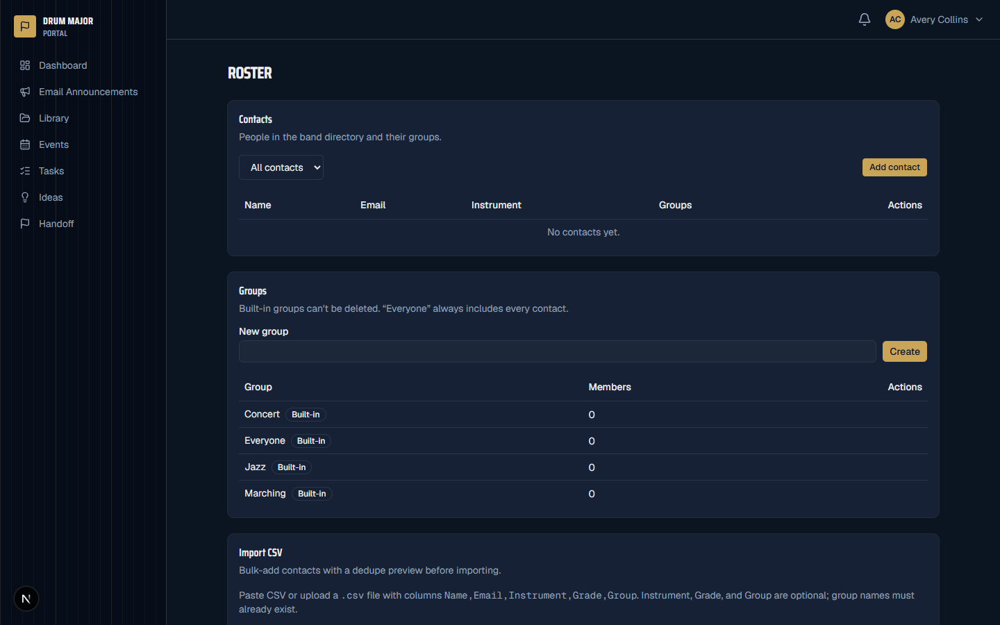
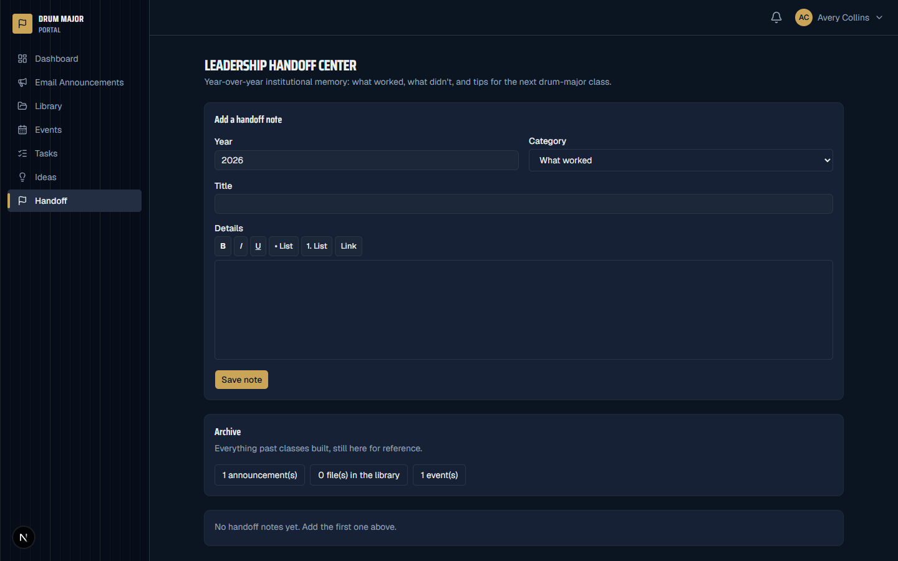
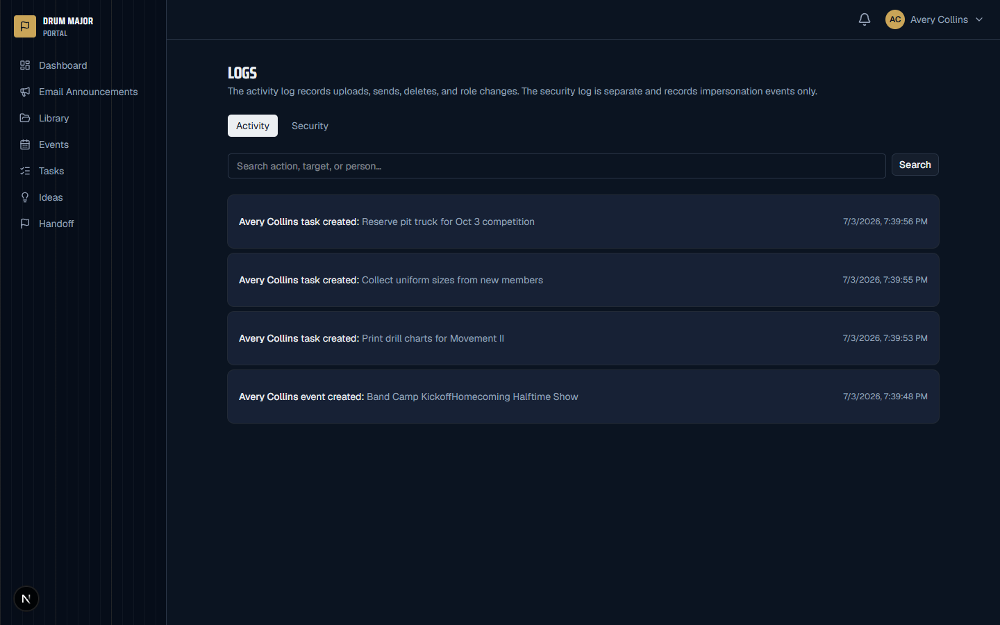
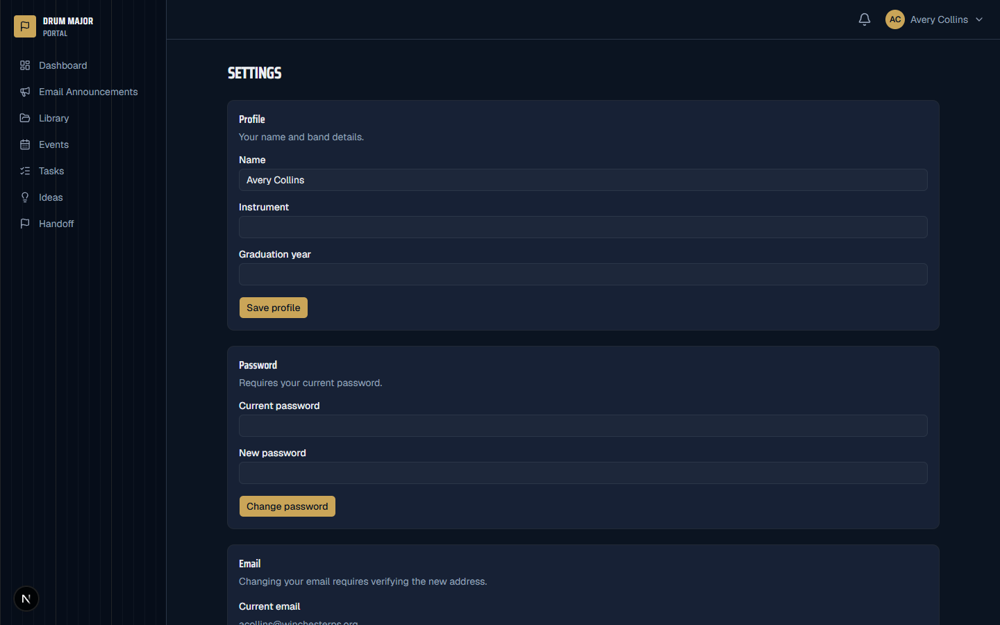
Local development needs Node 22 (an .nvmrc is included) and nothing else — the dev database is
PGlite, an in-process Postgres that creates itself on first run. No Docker, no database install.
git clone https://github.com/ItsRecharge/drummajor-portal
cd drummajor-portal
nvm use # Node 22 from .nvmrc
npm installThe client is generated into src/generated/prisma and is not committed — skip this and the dev server fails with "Can't resolve '@/generated/prisma/client'".
npx prisma generateThe predev hook applies every migration to a local .pglite directory automatically. With no DATABASE_URL set, the app runs entirely on PGlite; a dev-only fallback encryption key kicks in when APP_ENCRYPTION_KEY is unset.
npm run dev # http://localhost:3000Visiting the app redirects to /setup: create the organization, create the first admin (school-domain email), enter SMTP details (there's a "send test email" button; you can save placeholders locally), and optionally upload the Drive service-account JSON — or skip it and add it later. Finishing logs you in as admin.
Set DATABASE_URL in .env and apply migrations; the app switches from PGlite to the pg adapter automatically. Generate real secrets while you're there.
cp .env.example .env
openssl rand -base64 48 # APP_ENCRYPTION_KEY
openssl rand -base64 32 # AUTH_SECRET
npx prisma migrate deployThe portal ships with deploy artifacts in deploy/: a drummajor-portal.service systemd unit (reads env from an EnvironmentFile), a Caddyfile that gives the domain automatic HTTPS, and a step-by-step deploy/README.md for the music-department server — native Node + Postgres + Caddy, deliberately no Docker.
npx tsc --noEmit
npm run lint
npm run buildproxy.ts instead of middleware, async cookies()/params, Server Actions with useActionStateSession table, bcrypt credentials| Capability | Admin | Drum Major | Librarian |
|---|---|---|---|
| Announcements, events, tasks, ideas | ✓ | ✓ | ✗ |
| Music library | ✓ | ✓ | ✓ |
| Invite users | ✓ (any role) | ✓ (DMs only) | ✗ |
| Edit users, roles, settings | ✓ | ✗ | ✗ |
| Impersonation & god-mode edits | ✓ (logged) | ✗ | ✗ |
| Audit + security logs | ✓ | ✗ | ✗ |
Every email that creates an account is checked against the school-domain allowlist (@wpsstudent.com, @winchesterps.org) — at invite acceptance and at any email change.
Admins can impersonate a user to debug their view — a discreet banner shows while active. Impersonation events are written to a separate security log, not the regular audit log, so actions taken while impersonating stay attributable.
| Variable | Purpose |
|---|---|
DATABASE_URL | PostgreSQL connection string. Unset in dev → PGlite fallback |
APP_ENCRYPTION_KEY | AES-256-GCM key for secrets at rest (openssl rand -base64 48). Dev fallback exists outside production |
AUTH_SECRET | Session/token signing secret (openssl rand -base64 32) |
Gmail SMTP and Drive credentials are not env vars — they're entered in the wizard (or later in settings) and stored encrypted in the database.
Organization · User · Invite · Session · AppSettings (encrypted SMTP/Drive config) · Contact · Group · Announcement + EmailDelivery (per-recipient open tracking) · MusicPiece + MusicFile (versioned) · Event · Task · Note + votes/comments · HandoffNote · Notification · AuditLog · SecurityLog.
An in-process node-cron task (registered via src/instrumentation.ts, Node runtime only) polls the queue every minute for scheduled sends and pending deliveries. Because the queue state is in the database, restarts never lose a scheduled announcement. This design assumes the single-instance systemd deployment.
Nightly pg_dump via a systemd timer covers the database; the actual music and document files live in Google Drive.
It holds real student contact information and controls the band's official email channel. Invites are generated by admins or drum majors (who can only invite other drum majors), and any account-creating email must belong to one of the school's domains. There is no open signup route at all.
No. With no DATABASE_URL set, the app runs on PGlite — an in-process Postgres persisted to a local .pglite directory, with migrations applied automatically before npm run dev. Production uses real PostgreSQL through the same Prisma schema, so nothing changes in your code.
Deliberate hosting decision: the portal runs on a music-department server as a native drummajor-portal.service next to postgresql.service and caddy.service. One process, one box, automatic HTTPS via Caddy, no container layer to maintain.
Every recipient gets an individually generated message containing a unique invisible pixel; loading it stamps openedAt on that delivery row, which rolls up to "Opened 112/150"-style counts. Mail clients that block remote images won't register, so treat opens as a floor, not an exact figure.
Nothing is lost. The queue is stored in Postgres and processing is idempotent — already-delivered recipients are recorded, and the next scheduler tick resumes the remainder. Scheduled sends survive restarts the same way.
Almost always the service-account storage caveat: a bare service account has no My Drive quota of its own. Put the Band Library in a Shared Drive and add the service account as a member, or enable domain-wide delegation so it acts as the band's Workspace user.
Yes — impersonation. A discreet banner shows the admin they're impersonating, and the event is written to the separate admin-only security log (not the general audit log), so accountability survives even accidental changes made in someone else's view.
An optional admin setting (off by default). When enabled, non-admin announcements land in a pending queue instead of sending; an admin reviews and releases them from the announcement detail page.
Field-tested fixes — the first one was hit while producing this very site.
@/generated/prisma/clientThe Prisma client is generated code and isn't committed. Run npx prisma generate once after install (and after every schema change), then restart the dev server.
The toolchain requires Node ≥ 20.19; the repo standardizes on Node 22 — run nvm use to pick it up from .nvmrc. Also note this is Next.js 16: conventions differ from older training-data Next (e.g. proxy.ts replaces middleware.ts), so check node_modules/next/dist/docs/ before assuming an API.
Stop the dev server and delete the .pglite directory. The next npm run dev re-applies all migrations to a fresh database and the first-run wizard greets you again.
The allowlist rejects any address outside @wpsstudent.com / @winchesterps.org — including the first admin in the wizard and email changes later. Use a school address, or update src/lib/allowlist.ts for a different district.
Gmail SMTP needs an App Password (Google account → 2-Step Verification → App passwords), not the normal account password. Host smtp.gmail.com, port 587. Locally you can save placeholder values and configure real ones later — sends simply fail until then.
The scheduler runs inside the app process via instrumentation.ts — it only ticks while the server is running, on the Node runtime. Check that the systemd service is active and that logs show the cron tick; a stopped app means a paused queue (it resumes on start).
See the Drive caveat in the docs: bare service accounts own no storage. Move the library to a Shared Drive that includes the service account, or use domain-wide delegation. Also confirm the JSON has client_email and private_key — the wizard validates both.
npm run dev -- -p 3001, or stop the other process. In production the app listens on its configured port behind Caddy, so local conflicts don't apply.